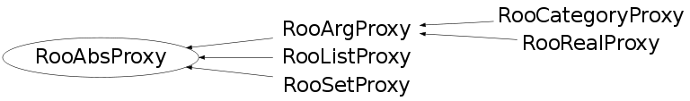

Function Members (Methods)
This is an abstract class, constructors will not be documented.
Look at the header to check for available constructors.
public:
| virtual | ~RooAbsProxy() |
| static TClass* | Class() |
| virtual TClass* | IsA() const |
| virtual const char* | name() const |
| const RooArgSet* | nset() const |
| RooAbsProxy& | operator=(const RooAbsProxy&) |
| virtual void | print(ostream& os, Bool_t addContents = kFALSE) const |
| virtual void | ShowMembers(TMemberInspector& insp) |
| virtual void | Streamer(TBuffer& b) |
| void | StreamerNVirtual(TBuffer& b) |
protected:
| virtual void | changeNormSet(const RooArgSet* newNormSet) |
| virtual Bool_t | changePointer(const RooAbsCollection& newServerSet, Bool_t nameChange = kFALSE, Bool_t factoryInitMode = kFALSE) |
Data Members
protected:
| RooArgSet* | _nset | ! Normalization set to be used for evaluation of RooAbsPdf contents |
Class Charts
{kind=link}
{kind=link}
{kind=link}
{kind=link}

Function documentation
Bool_t changePointer(const RooAbsCollection& newServerSet, Bool_t nameChange = kFALSE, Bool_t factoryInitMode = kFALSE)